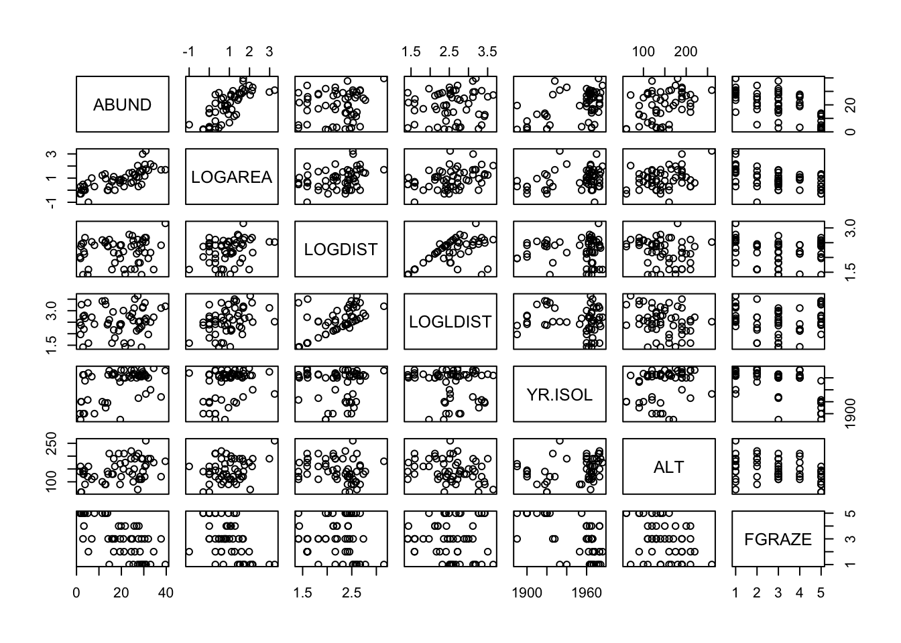
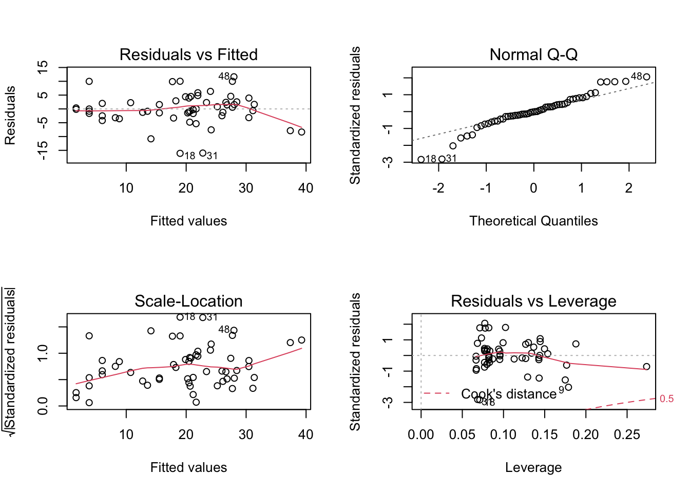

This exercise revisits the Loyn data, asking if a better model for the data could be achieved by including additional predictors, and applying a systematic model selection procedure.
# at the beginning of the line.
str() function. It seems so far that the abundance of birds ABUND is explained by both the area of the patch LOGAREA, and the grazing intensity FGRAZE, but some observations are still poorly fitted by the model. Here we will be using all the explanatory variables to explain variation in bird density. If needed, remind yourself of your data exploration you conducted in Section 1. Do any of the variables need transforming? If so, what transformation did you apply? Add the required variables to the data set.
loyn <- read.table("./data/loyn.txt", header = TRUE,
stringsAsFactors = TRUE)
str(loyn)
## 'data.frame': 56 obs. of 8 variables:
## $ Site : int 1 2 3 4 5 6 7 8 9 10 ...
## $ ABUND : num 5.3 2 1.5 17.1 13.8 14.1 3.8 2.2 3.3 3 ...
## $ AREA : num 0.1 0.5 0.5 1 1 1 1 1 1 1 ...
## $ DIST : int 39 234 104 66 246 234 467 284 156 311 ...
## $ LDIST : int 39 234 311 66 246 285 467 1829 156 571 ...
## $ YR.ISOL: int 1968 1920 1900 1966 1918 1965 1955 1920 1965 1900 ...
## $ GRAZE : int 2 5 5 3 5 3 5 5 4 5 ...
## $ ALT : int 160 60 140 160 140 130 90 60 130 130 ...
loyn$FGRAZE <- factor(loyn$GRAZE)
loyn$LOGAREA <- log10(loyn$AREA)
loyn$LOGDIST <- log10(loyn$DIST)
loyn$LOGLDIST <- log10(loyn$LDIST)
# Example:
# Rank | Predictor | Biological effect
# 1 | LOGAREA | Large patches containing proportionally
# more core habitat: enable persistence of
# species with larger home ranges.
# 3 | LOGDIST | ?
# ? | LOGLDIST | ?
# 2 | YR.ISOL | ?
# ? | ALT | ?
# ? | FGRAZE | ?
# expect to come up with different predictions!
# The main limitation is our lack of insider and expert knowledge of the
# study system and area, of course.
pairs() is a very effective way of doing this when the number of variables is not too large. Hints:VOI<- c("Var1", "Var2", ...)Mydata[, VOI]

# There is variable degrees of imbalance (correlation) between predictors
# such as:
# LOGAREA and FGRAZE,
# LOGDIST and LOGLDIST (quite expected),
# YR.ISOL and other variables like LOGAREA or FGRAZE,
# LOGAREA and ALT,
# but overall a decent spread of observations across these pairs of predictors.
# The relationship between the response variable ABUND and all the predictors
# is visible in the top row:
# Some potential correlations present like with LOGAREA (positive),
# YR.ISOl (positive), maybe ALT (positive) and FGRAZE (negative).
anova() and summary() functions. Make sure you understand the difference between these two summaries, and the mathematical and biological interpretation of the different coefficients (i.e. would you be able to reconstruct and use the model formula to make predictions? In doubt, try it and seek assistance!).
anova(M1)
## Analysis of Variance Table
##
## Response: ABUND
## Df Sum Sq Mean Sq F value Pr(>F)
## LOGAREA 1 3471.0 3471.0 93.1303 1.247e-12 ***
## LOGDIST 1 65.5 65.5 1.7568 0.191565
## LOGLDIST 1 136.5 136.5 3.6630 0.061868 .
## YR.ISOL 1 458.8 458.8 12.3109 0.001019 **
## ALT 1 78.2 78.2 2.0979 0.154281
## FGRAZE 4 413.5 103.4 2.7736 0.037992 *
## Residuals 46 1714.4 37.3
## ---
## Signif. codes: 0 '***' 0.001 '**' 0.01 '*' 0.05 '.' 0.1 ' ' 1
summary(M1)
##
## Call:
## lm(formula = ABUND ~ LOGAREA + LOGDIST + LOGLDIST + YR.ISOL +
## ALT + FGRAZE, data = loyn)
##
## Residuals:
## Min 1Q Median 3Q Max
## -15.8992 -2.7245 -0.2772 2.7052 11.2811
##
## Coefficients:
## Estimate Std. Error t value Pr(>|t|)
## (Intercept) 36.68025 115.16348 0.319 0.7515
## LOGAREA 6.83303 1.50330 4.545 3.97e-05 ***
## LOGDIST 0.33286 2.74778 0.121 0.9041
## LOGLDIST 0.79765 2.13759 0.373 0.7107
## YR.ISOL -0.01277 0.05803 -0.220 0.8267
## ALT 0.01070 0.02390 0.448 0.6565
## FGRAZE2 0.52851 3.25221 0.163 0.8716
## FGRAZE3 0.06601 2.95871 0.022 0.9823
## FGRAZE4 -1.24877 3.19838 -0.390 0.6980
## FGRAZE5 -12.47309 4.77827 -2.610 0.0122 *
## ---
## Signif. codes: 0 '***' 0.001 '**' 0.01 '*' 0.05 '.' 0.1 ' ' 1
##
## Residual standard error: 6.105 on 46 degrees of freedom
## Multiple R-squared: 0.7295, Adjusted R-squared: 0.6766
## F-statistic: 13.78 on 9 and 46 DF, p-value: 2.115e-10
vif() function in the car package.
library(car)
vif(M1)
## GVIF Df GVIF^(1/(2*Df))
## LOGAREA 2.201116 1 1.483616
## LOGDIST 1.907874 1 1.381258
## LOGLDIST 2.228456 1 1.492801
## YR.ISOL 3.252591 1 1.803494
## ALT 1.597400 1 1.263883
## FGRAZE 7.925036 4 1.295314
# potential problem with FGRAZE (as seen from data exploration) with LOGAREA
# or YR.ISOL
# ignore for the moment
anova(M1)
## Analysis of Variance Table
##
## Response: ABUND
## Df Sum Sq Mean Sq F value Pr(>F)
## LOGAREA 1 3471.0 3471.0 93.1303 1.247e-12 ***
## LOGDIST 1 65.5 65.5 1.7568 0.191565
## LOGLDIST 1 136.5 136.5 3.6630 0.061868 .
## YR.ISOL 1 458.8 458.8 12.3109 0.001019 **
## ALT 1 78.2 78.2 2.0979 0.154281
## FGRAZE 4 413.5 103.4 2.7736 0.037992 *
## Residuals 46 1714.4 37.3
## ---
## Signif. codes: 0 '***' 0.001 '**' 0.01 '*' 0.05 '.' 0.1 ' ' 1
summary(M1)
##
## Call:
## lm(formula = ABUND ~ LOGAREA + LOGDIST + LOGLDIST + YR.ISOL +
## ALT + FGRAZE, data = loyn)
##
## Residuals:
## Min 1Q Median 3Q Max
## -15.8992 -2.7245 -0.2772 2.7052 11.2811
##
## Coefficients:
## Estimate Std. Error t value Pr(>|t|)
## (Intercept) 36.68025 115.16348 0.319 0.7515
## LOGAREA 6.83303 1.50330 4.545 3.97e-05 ***
## LOGDIST 0.33286 2.74778 0.121 0.9041
## LOGLDIST 0.79765 2.13759 0.373 0.7107
## YR.ISOL -0.01277 0.05803 -0.220 0.8267
## ALT 0.01070 0.02390 0.448 0.6565
## FGRAZE2 0.52851 3.25221 0.163 0.8716
## FGRAZE3 0.06601 2.95871 0.022 0.9823
## FGRAZE4 -1.24877 3.19838 -0.390 0.6980
## FGRAZE5 -12.47309 4.77827 -2.610 0.0122 *
## ---
## Signif. codes: 0 '***' 0.001 '**' 0.01 '*' 0.05 '.' 0.1 ' ' 1
##
## Residual standard error: 6.105 on 46 degrees of freedom
## Multiple R-squared: 0.7295, Adjusted R-squared: 0.6766
## F-statistic: 13.78 on 9 and 46 DF, p-value: 2.115e-10
# ANOVA allows testing overall significance for categorical predictors,
# which is more handy.
# But the results of this ANOVA depend on the order of the variables,
# which is arbitrary here.
# We could change the order but there are too many possible permutations
# Summary p-values don't suffer that problem but test different hypotheses
# It would be useful to use an ANOVA that doesn't depend on the order
# of inclusion of the variables
drop1() for choosing which single term is the best candidate for deletion (remember to use the test = ”F” argument to perform F tests). What is that term?
drop1(M1, test = "F")
## Single term deletions
##
## Model:
## ABUND ~ LOGAREA + LOGDIST + LOGLDIST + YR.ISOL + ALT + FGRAZE
## Df Sum of Sq RSS AIC F value Pr(>F)
## <none> 1714.4 211.60
## LOGAREA 1 770.01 2484.4 230.38 20.6603 3.97e-05 ***
## LOGDIST 1 0.55 1715.0 209.62 0.0147 0.90411
## LOGLDIST 1 5.19 1719.6 209.77 0.1392 0.71075
## YR.ISOL 1 1.81 1716.2 209.66 0.0485 0.82675
## ALT 1 7.47 1721.9 209.85 0.2004 0.65650
## FGRAZE 4 413.50 2127.9 215.70 2.7736 0.03799 *
## ---
## Signif. codes: 0 '***' 0.001 '**' 0.01 '*' 0.05 '.' 0.1 ' ' 1
# LOGDIST is the least significant, hence makes the least
# contribution to the variability explained by the model,
# with respect to the number of degrees of freedom it uses (1)
drop1(), until there are no longer any non-significant terms.
M2 <- lm(ABUND ~ LOGAREA + LOGLDIST + # removing LOGDIST here
YR.ISOL + ALT + FGRAZE,
data = loyn)
# or use the shortcut:
M2<- update(M1, formula = . ~ . - LOGDIST) # "." means all previous variables
drop1(M2, test = "F")
## Single term deletions
##
## Model:
## ABUND ~ LOGAREA + LOGLDIST + YR.ISOL + ALT + FGRAZE
## Df Sum of Sq RSS AIC F value Pr(>F)
## <none> 1715.0 209.62
## LOGAREA 1 769.64 2484.6 228.38 21.0925 3.285e-05 ***
## LOGLDIST 1 8.57 1723.5 207.90 0.2349 0.63015
## YR.ISOL 1 1.73 1716.7 207.68 0.0474 0.82864
## ALT 1 7.07 1722.0 207.85 0.1938 0.66177
## FGRAZE 4 413.28 2128.2 213.71 2.8315 0.03482 *
## ---
## Signif. codes: 0 '***' 0.001 '**' 0.01 '*' 0.05 '.' 0.1 ' ' 1
# YR.ISOL is now the least significant, hence makes the least
# contribution to the variability explained by the model,
# with respect to the number of degrees of freedom it uses (1)
M3 <- update(M2, formula = . ~ . - YR.ISOL)
drop1(M3, test = "F")
## Single term deletions
##
## Model:
## ABUND ~ LOGAREA + LOGLDIST + ALT + FGRAZE
## Df Sum of Sq RSS AIC F value Pr(>F)
## <none> 1716.7 207.68
## LOGAREA 1 790.20 2506.9 226.88 22.0943 2.218e-05 ***
## LOGLDIST 1 8.32 1725.0 205.95 0.2327 0.6317501
## ALT 1 9.71 1726.4 205.99 0.2715 0.6047169
## FGRAZE 4 848.77 2565.5 222.18 5.9330 0.0005808 ***
## ---
## Signif. codes: 0 '***' 0.001 '**' 0.01 '*' 0.05 '.' 0.1 ' ' 1
# LOGLDIST and ALT now the least significant. Choosing on the basis of
# p-values this similar is really quite arbitrary, so would be best guided
# by expert knowledge if we have it.
# in the absence of strong a-priori expertise, we'll go for LOGLDIST
M4 <- update(M3, formula = . ~ . - LOGLDIST)
drop1(M4, test = "F")
## Single term deletions
##
## Model:
## ABUND ~ LOGAREA + ALT + FGRAZE
## Df Sum of Sq RSS AIC F value Pr(>F)
## <none> 1725.0 205.95
## LOGAREA 1 1130.78 2855.8 232.18 32.1203 7.582e-07 ***
## ALT 1 5.37 1730.4 204.12 0.1526 0.6977551
## FGRAZE 4 914.23 2639.3 221.76 6.4923 0.0002833 ***
## ---
## Signif. codes: 0 '***' 0.001 '**' 0.01 '*' 0.05 '.' 0.1 ' ' 1
# and finally drop ALT from the model
M5 <- lm(ABUND ~ LOGAREA + FGRAZE, data = loyn) # writing model in full for clarity
drop1(M5, test = "F")
## Single term deletions
##
## Model:
## ABUND ~ LOGAREA + FGRAZE
## Df Sum of Sq RSS AIC F value Pr(>F)
## <none> 1730.4 204.12
## LOGAREA 1 1153.8 2884.2 230.73 33.3405 4.901e-07 ***
## FGRAZE 4 1136.5 2866.9 224.40 8.2101 3.598e-05 ***
## ---
## Signif. codes: 0 '***' 0.001 '**' 0.01 '*' 0.05 '.' 0.1 ' ' 1
# All significant: no more terms to drop. Here we are, back to a
# familiar version of the model!

# Seen that already!
# For info:
# To test the normality of residuals assumption we use the Normal Q-Q plot.
# The central residuals are not too far from the Q-Q line but the extremes
# are too extreme (the tails of the distribution are too long).
# Some observations, both high and low, are poorly explained by the model.
# The plot of the residuals against the fitted values suggests
# these extreme residuals happen for intermediate fitted values.
# Looking at the homogeneity of variance assumption
# (Residuals vs Fitted and Scale-Location plot),
# the graphs are mostly messy, with no clear pattern emerging.
# There is a hint of smaller variance with the lowest fitted values,
# which is not ideal.
# This could mean that the homogeneity of variance assumption is not met
# (i.e. the variances are not the same).
# The observations with the highest leverage don't appear to be overly
# influential, based on Cook's distances in the Residuals vs Leverage plot.
# ABUND being bounded by zero, it wouldn't be too surprising that the
# variance increases with the mean abundance.
birds.inter.1 <- lm(ABUND ~ FGRAZE * LOGAREA), which we left with non-significant terms. Do you need to use drop1() to simplify that model?
# No we don't, in this simple case:
# when an interaction is significant, the main effects should be left
# in irrespective of significance, because the interaction cannot be
# interpreted correctly without its main effect.
# Likewise, when an interaction is non-significant it must go first,
# and only then the evidence for the main effects can be assessed.
# Because R always includes interactions *after* their main effects
# in the models, the anova of the model returns the same result as drop1,
# in our simple model which has no interactions with other terms
# Demo:
M6<- lm(ABUND ~ LOGAREA * FGRAZE, data = loyn) # writing the model in full for clarity
anova(M6)
## Analysis of Variance Table
##
## Response: ABUND
## Df Sum Sq Mean Sq F value Pr(>F)
## LOGAREA 1 3471.0 3471.0 108.1284 1.158e-13 ***
## FGRAZE 4 1136.5 284.1 8.8514 2.187e-05 ***
## LOGAREA:FGRAZE 4 253.8 63.4 1.9764 0.1139
## Residuals 46 1476.6 32.1
## ---
## Signif. codes: 0 '***' 0.001 '**' 0.01 '*' 0.05 '.' 0.1 ' ' 1
drop1(M6, test= "F") # drop1 is clever enough that it doesn't let you
## Single term deletions
##
## Model:
## ABUND ~ LOGAREA * FGRAZE
## Df Sum of Sq RSS AIC F value Pr(>F)
## <none> 1476.6 203.24
## LOGAREA:FGRAZE 4 253.77 1730.4 204.12 1.9764 0.1139
# see the p-values for the main effect, in the presence of their interaction.
# Biologically: what we already found out in the previous LM exercises:
# There is a significant effect of grazing levels, especially the highest
# level with a negative effect on bird abundance
# There is a significant positive effect of patch area, too.
# The relative importance of patch area and grazing is not clear, as these
# are correlated, with smaller patches also having higher grazing intensity
# on average, and larger patches lower grazing intensity.
# Some observations are poorly predicted (fitted) using the set of
# available predictors.
# Methodologically:
# Doing model selection is difficult without an intrinsic / expert knowledge
# of the system, to guide what variables to include.
# Even with this dataset, many more models could have been formulated.
# For example, for me, theory would have suggested to test an interaction
# between YR.ISOL and LOGDIST (or LOGLDIST?),
# because LOGDIST will affect dispersal,
# and the time since isolation of the patch may affect how important
# dispersal has been to maintain or rescue populations
# (for recently isolated patches, dispersal, and hence distance to nearest
# patches may have a less important effect)
End of the Linear model with interactive continuous and categorical predictors exercise